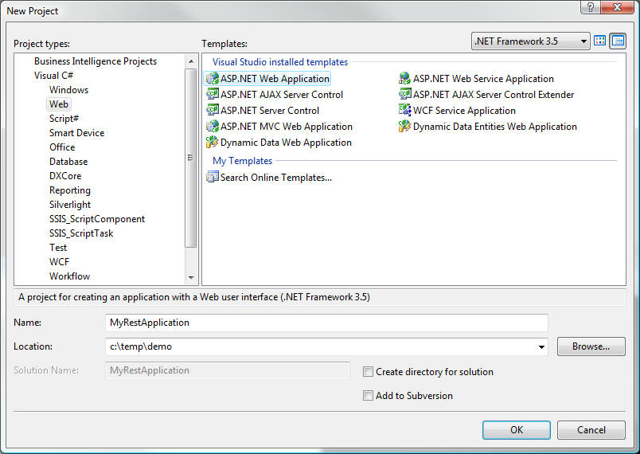
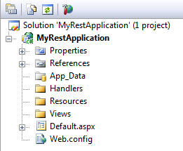
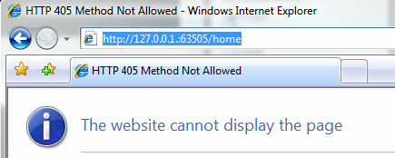
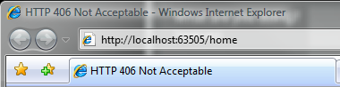

First, follow the instructions in Downloading and compiling OpenRasta. You should now have the compiled version of OpenRasta, ready for use.
Open Visual Studio 2008 and create a new Web Application project.

Once the project is created, add a reference to the 3.5 version of OpenRasta.dll. It should be in \openrasta\bin\release\net-35\OpenRasta.dll.
Now, edit the web.config file to point to the OpenRasta http handlers and modules. They're the two components required for OpenRasta to serve requests made against your server.
In the <system.web> section, in <httpHandlers>, add the following line.
<add verb="*" path="*.rastahook" type="OpenRasta.Web.OpenRastaHandler, OpenRasta"/>
In <httpModules>, add the following.
<add name="OpenRastaModule" type="OpenRasta.Web.OpenRastaModule, OpenRasta"/>
If you're using IIS7, the http handlers and modules need to be defined in the <system.webServer> section, as follow.
<system.webServer>
<validation validateIntegratedModeConfiguration="false"/>
<modules>
<add name="OpenRastaModule" type="OpenRasta.Web.OpenRastaModule, OpenRasta"/>
</modules>
<handlers>
<add name="OpenRastaHandler" verb="*" path="*.rastahook" type="OpenRasta.Web.OpenRastaHandler, OpenRasta" />
</handlers>
</system.webServer>
The next step is to get rid of the content in the automatically generated default.aspx page. You need to keep that page at the root of the site, otherwise asp.net won't recognize OpenRasta. Simply remove all the content until your default.aspx looks like the following.
<%@ Page Language="C#" AutoEventWireup="true" CodeBehind="default.aspx.cs" Inherits="OpenRasta.Demo._default" %>
<!-- Nothing to see here. -->
The first step in designing your web site is to define what resources you want to serve. One of the first resources you will need is a home page.
First, create three folders at the root of your solution.
Then, create a class in the Resources folder, and call it Home, and add a few properties that will be needed for future rendering.
namespace MyRestApplication.Resources
{
public class Home
{
public string Title { get; set; }
}
}
The next step is to create a handler that will generate the Home resource. Go ahead and create an empty HomeHandler class in the Handlers folder.
All the elements are now in place to create the configuration. OpenRasta is configured through the use of a fluent API. You can either add the configuration to your global.asax, or create a specific class. Let's do the latter, and add a Configurator class at the root of the site, and implement the IConfigurationSource interface.
using System;
using OpenRasta.Configuration;
namespace MyRestApplication
{
public class Configurator : IConfigurationSource
{
public void Configure()
{
// the configuration goes here
}
}
}
The Configure method is where all your resources will be declared. Let's define the resource first, using a manual configuration. to do so, declare a using block and use the ResourceSpace static class to start your configuration.
using (OpenRastaConfiguration.Manual)
{
ResourceSpace.Has.
}
The Has word is the root of the configuration options. You'll find a few options in there, depending on which version of OpenRasta you're using, and any third-party code that may attach to this word to add their own configuration options.
First, define the resource Home we created earlier by using the ResourcesOfType generic method. Attach the resource to the /home uri by using the AtUri method. Finally, define that the HomeHandler will be responsible for instantiating (a process called dereferencing) the Home resource. You should now have a configuration looking like the following.
ResourceSpace.Has.ResourcesOfType<Home>()
.AtUri("/home")
.HandledBy<HomeHandler>();
If you now try to run this website, you'll end up with an HTTP 405 error.

OpenRasta leverages the status codes defined in HTTP. A 405 error means that the method used to access the URI is not allowed on the resource.
Whenever you access any URI over HTTP, a method is used to define what action is to be executed against the resource. Here, the method GET was used to access /home, but OpenRasata didn't find any matching method. And indeed, your HomeHandler doesn't have any method defined!
Let's create a Get method on the HomeHandler class, and return a new instance of the Home resource.
using MyRestApplication.Resources;
namespace MyRestApplication.Handlers
{
public class HomeHandler
{
public object Get()
{
return new Home { Title = "Welcome home." };
}
}
}
We simply return a new home instance from the handler. Let's try to run the page again.

New error, at least we made some progress. 406 is the status code a server returns when it cannot find a compatible media type as requested by the browser.
OpenRasta leverages content negotiation. Whenever your browser (or any other http client) sends a request, it can include an Accept header defining what formats it understands. Those usually include html and most of the plugin-supported types a browser can render. These types are called representations.
In our configuration, we haven't specified specified yet what representations we support for our Home resource, and OpenRasta returns a 406 to let the client know that no compatible representation was found. To enable generating representations, OpenRasta uses codecs, objects that can turn the bytes sent over the wire into objects and back.
Go go ahead and create a new aspx page in our Views folder, and call it HomeView.aspx. When you use an aspx page as a view in OpenRasta, you essentially create a template to generate content. As such, postbacks and events are not supported. So go ahead and remove the form tag. Your page should look something like the following.
<%@ Page Language="C#" AutoEventWireup="true" CodeBehind="HomeView.aspx.cs" Inherits="MyRestApplication.Views.HomeView" %>
<!DOCTYPE html PUBLIC "-//W3C//DTD XHTML 1.0 Transitional//EN" "http://www.w3.org/TR/xhtml1/DTD/xhtml1-transitional.dtd">
<html xmlns="http://www.w3.org/1999/xhtml" >
<head runat="server">
<title></title>
</head>
<body>
<div>
Welcome to my page!
</div>
</body>
</html>
Finally, we're going to add this view to our configuration. Import the configuration elements for webforms by importing the OpenRasta.Configuration.WebForms namespace, and use the AndRenderedByAspx method to define your view. Your configuration should now be looking like this.
using MyRestApplication.Handlers;
using MyRestApplication.Resources;
using OpenRasta.Configuration;
using OpenRasta.Configuration.WebForms;
namespace MyRestApplication
{
public class Configurator : IConfigurationSource
{
public void Configure()
{
using (OpenRastaConfiguration.Manual)
{
ResourceSpace.Has.ResourcesOfType<Home>()
.AtUri("/home")
.HandledBy<HomeHandler>()
.AndRendededByAspx("~/Views/HomeView.aspx");
}
}
}
}
If you now run that page, you'll notice that we have our content showing! But so far, we've only rendered static text.
The handler created an instance of the Home type. It's now time to put it to good use. Edit the code-behind of your view to add a property of type Home.
using System;
using MyRestApplication.Resources;
namespace MyRestApplication.Views
{
public partial class HomeView : System.Web.UI.Page
{
public Home Home { get; set; }
}
}
OpenRasta will associate that property automatically with the value returned by your handler.
By leveraging the aspx syntax, you can now use the property we defined earlier. Compile the application for visual studio to pick-up our new property in intellisense, and modify the aspx page to render the title property in both the head title tag and the content.
<%@ Page Language="C#" AutoEventWireup="true" CodeBehind="HomeView.aspx.cs" Inherits="MyRestApplication.Views.HomeView" %>
<!DOCTYPE html PUBLIC "-//W3C//DTD XHTML 1.0 Transitional//EN" "http://www.w3.org/TR/xhtml1/DTD/xhtml1-transitional.dtd">
<html xmlns="http://www.w3.org/1999/xhtml" >
<head runat="server">
<title><%= Home.Title %></title>
</head>
<body>
<div>
<%= Home.Title %>
</div>
</body>
</html>
Run the page, and you should be greeted by our page, with the correct data being displayed.